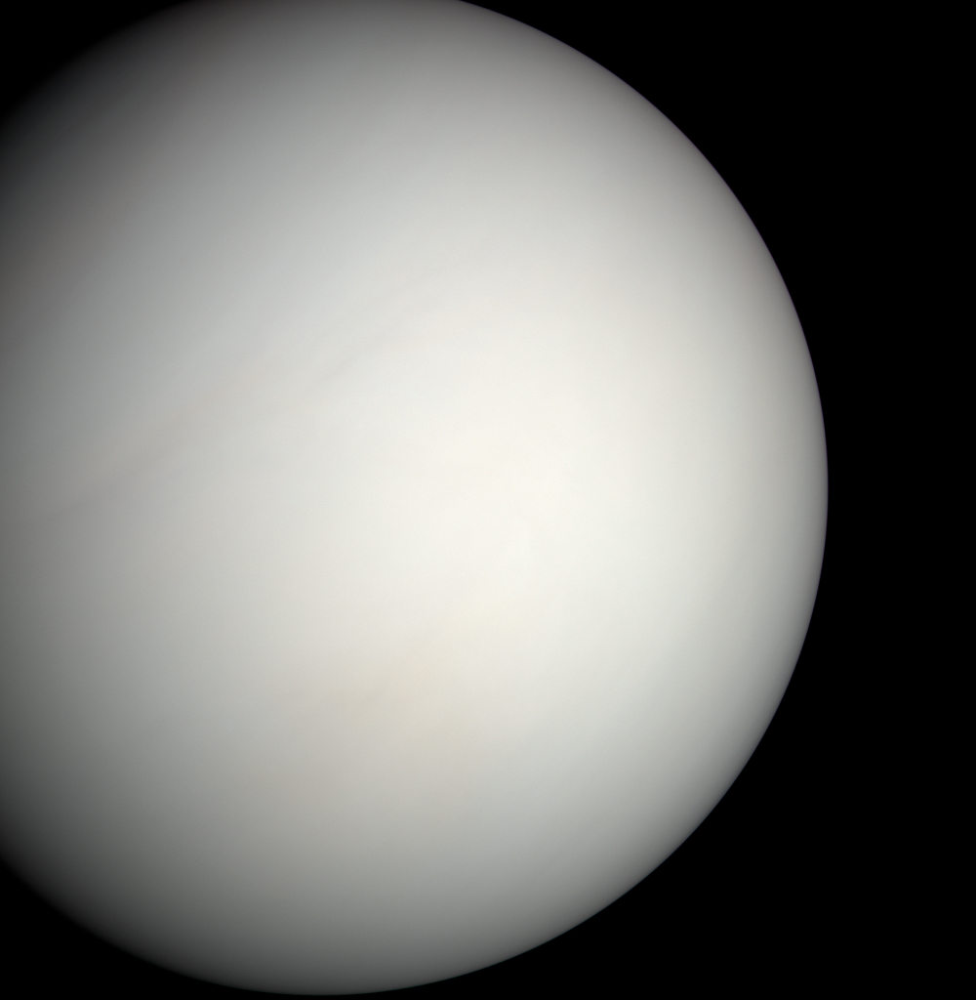

Planetary Fact Sheet
| Data Point | Mercury | Venus | Earth | Mars |
|---|---|---|---|---|
| Image |  |
 |  |
|
| Mass (10^24 kg) | 0.33 | 4.87 | 5.97 | 0.642 |
| Diameter (km) | 4879 | 12104 | 12756 | 6792 |
| Distance from Sun (million km) | 57.9 | 108.2 | 149.6 | 227.9 |
| Gravity (m/s²) | 3.7 | 8.9 | 9.8 | 3.7 |
| Length of Day (hours) | 4222.6 | 2802.0 | 24.0 | 24.7 |
| Moons | 0 | 0 | 1 | 2 |
| Escape Velocity | 4.3 | 10.4 | 11.2 | 2.4 |